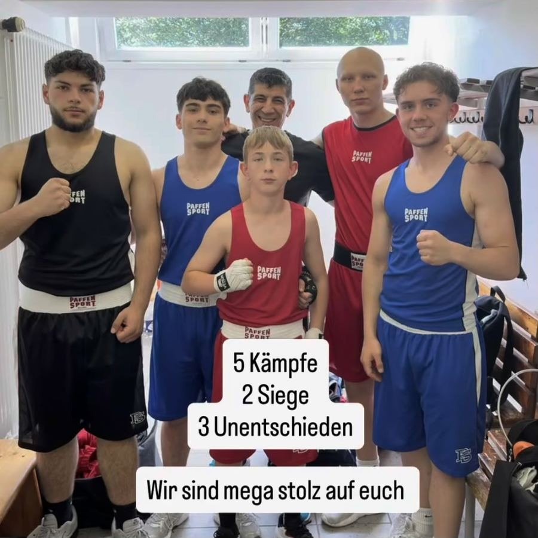

13. Juni 2026 – Duelle der Champions, Wiesbaden
5 Kämpfer, starker Teamauftritt in Wiesbaden
Gleich fünf Athleten des Boxring Wetterau standen bei der Veranstaltung "Duelle der Champions" in Wiesbaden im Ring – ein starkes Zeichen für die Breite und den Zusammenhalt im Verein. Niko Kotanidis und Dominik Deichert konnten ihre Kämpfe für sich entscheiden, Cavit Gencer, Murad Mezhidov und Yusuf Demiroglu boxten jeweils unentschieden gegen teils erfahrene Gegner aus der Region. Die Gesamtbilanz von 5 Kämpfen, 2 Siegen und 3 Unentschieden zeigt den Trainingsfleiß und die gewachsene Kampfstärke im gesamten Team des Boxring Wetterau aus Friedberg. Der Verein ist mega stolz auf die gezeigte Leistung aller fünf Boxer und blickt mit noch mehr Rückenwind auf die kommenden Wettkämpfe.